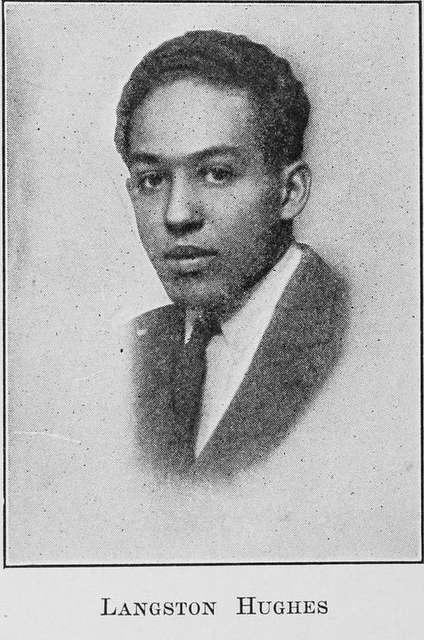

Langston Hughes

Langston Hughes, 1902-1967
Born in Missouri, 1902, Hughes spent his childhood being raised by his grandmother. After settling in Ohio he began to write poetry. Attending university at Columbia University in New York City he held many jobs. Langston Hughes published his first poetry book in 1926. Langston Hughes went on to become an established author of novels, poetry, and screenplay. Langston Hughes later died as a result of prostate cancer in New York City, 1967. His NYC home has since been designated a landmark by The New York City Preservation Commission.